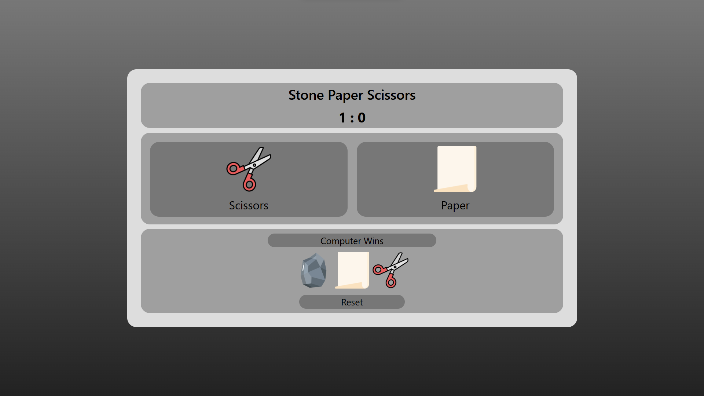
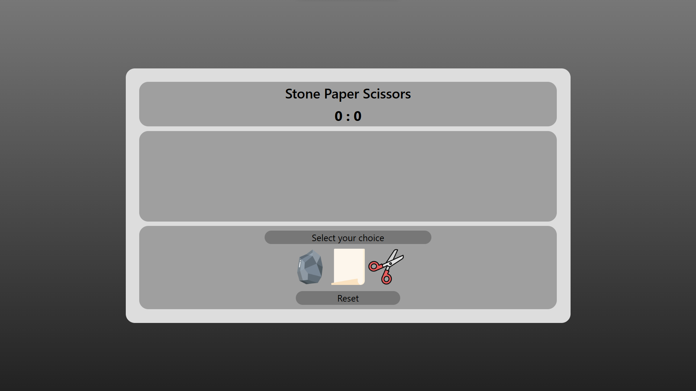

Short Info
This is a digital interface for the normal Rock Paper Scissor we use to play with our hands. In this we play with the computer.
About this project
Stone Paper Scissor is a simple and classic game played using hands. Player should select one of the three option rock, scissor or paper. In my project opponent is computer.
Features
- Scoreboard : shows score of player and computer
- Reset button : resets Scoreboard
HTML
CSS
JavaScript
Git
Images
Here are some screenshots that show the design, features, and how the project works.



 Project Link
Project Link